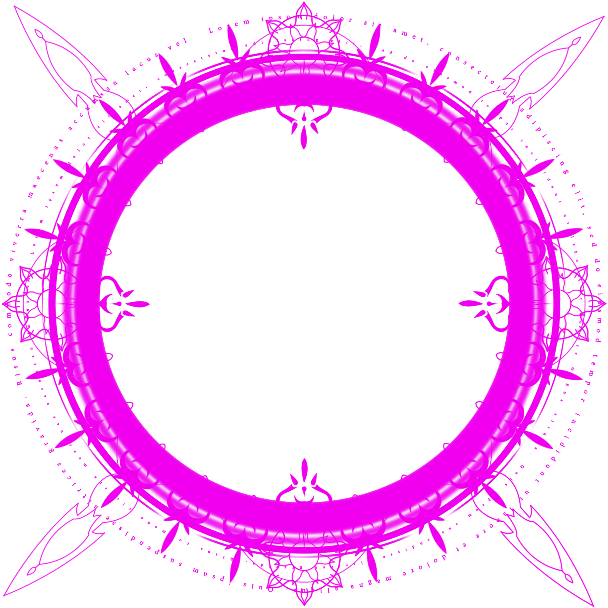
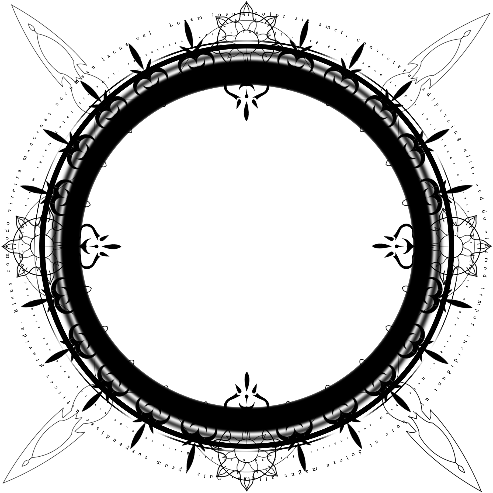
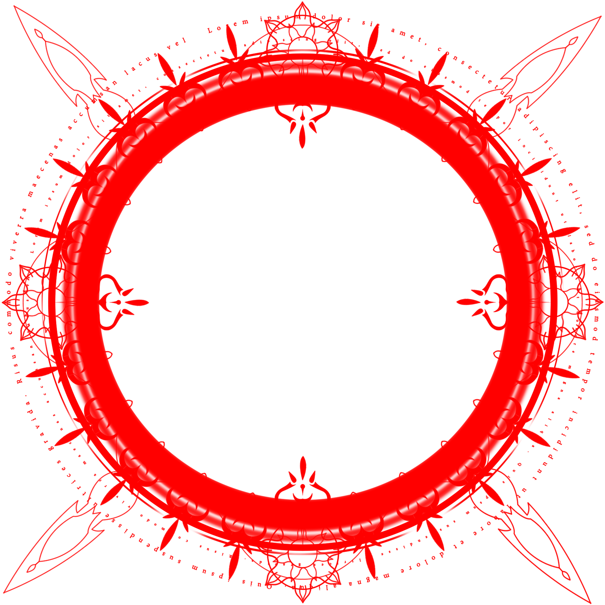
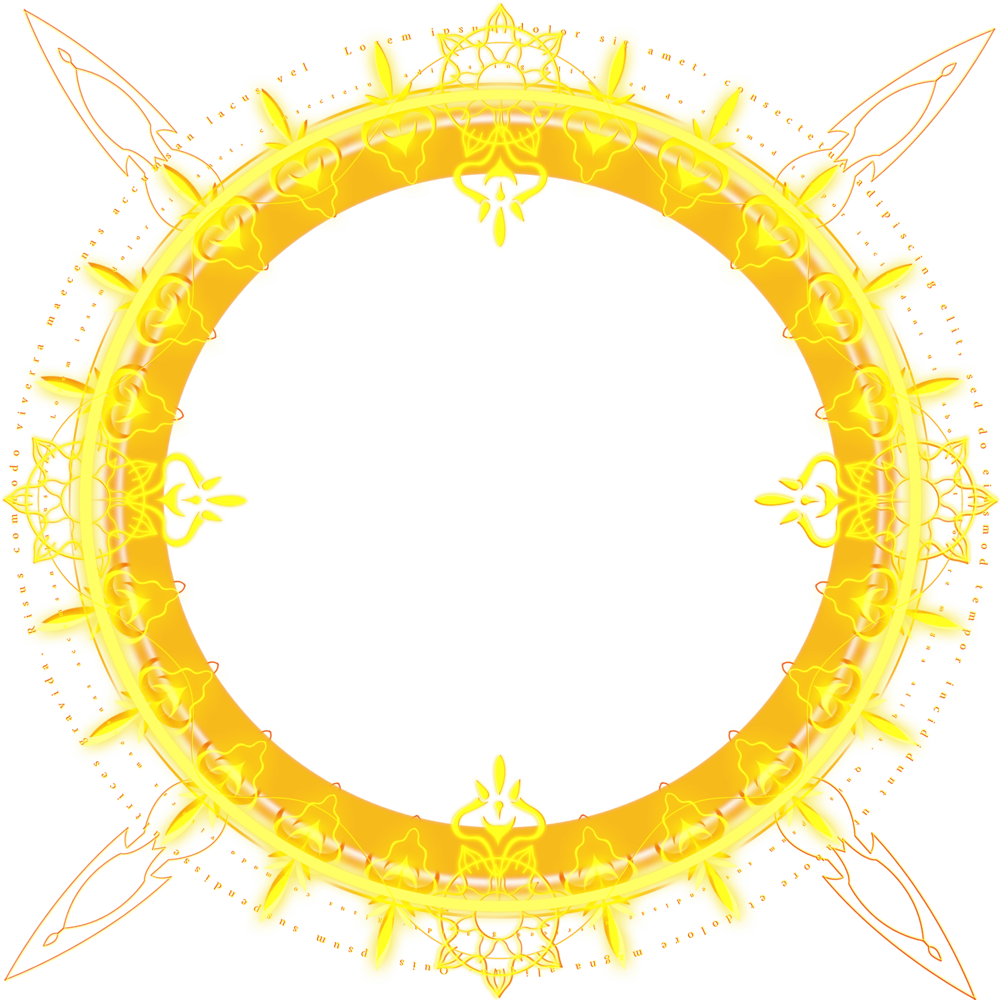

<!DOCTYPE html>
<html lang="zh">
	<head>
		<meta charset="UTF-8">
		<meta name="viewport" content="width=device-width, initial-scale=1.0">
		<meta http-equiv="X-UA-Compatible" content="ie=edge">
		<title>球型相册</title>
		<link rel="stylesheet" type="text/css" href="css/reset.css" />
		<link rel="stylesheet" type="text/css" href="css/case4.css" />
	</head>
	<body>
		<div class="box">
			<div class="cover"></div>
			<div class="container">
				<ul class="pics"></ul>
			</div>
		</div>
		<script src="js/jquery-3.4.1.js"></script>
		<script type="text/javascript">
			
			// 1.参数定义
			let imgArr = [],
				temArr = [],
				tem = 0;

			let n = 2,//n = 0,1,2,3,.....正整数，控制一个球上的图片数量
				peices = getPeices(n),//将一个球分成24等份
				sets = getSets(n), //形成球状每一个经线（与赤道线平行的圆圈）上所需的图片数量的设置
				setsLen = sets.length,
				rotStepY = 360 / peices,//每一等份所占的度数
				rotStepX = 90 / ((setsLen - 1) / 2),//每一等份所占的度数
				rotY = [];//存储每组图的Y轴旋转增量
				
				console.log(rotStepX)
			// 2.根据n生成pieces分块数量以及sets数组的内容
			// n=0 pieces=8 , n=1 pieces=16, n=2,pieces = 24,(后一个是前两个之和)
			function getPeices(num) {
				let pe = 0,
					pre1 = 8,
					pre2 = 16;
				if(num === 0) {
					pe = 8;
				}else if(num === 1) {
					pe = 16;
				}else{
					for(let i = 0; i < num -1; i++) {
						pe = pre1 + pre2;
						pre1 = pre2;
						pre2 = pe;
					}
				}
				return pe
			}
			function getSets(num) {
				let arr = [];
				let len = 2*num + 1;
				arr = arr.concat([1,4]);
				for(let i = 0; i < len; i++) {
					arr.push((num + 1)*4)
				}
				arr = arr.concat([4,1]);
				return arr;
			}
			
				
			// 2.计算总图片个数
			let loopMax; //总共所需的图片数量，作为循环图片分组时的条件
			sets.forEach((item, index) => {
				rotY.push(peices / item * rotStepY);
				tem += item;
				if (index === setsLen - 1) {
					loopMax = tem;
				}
			})
			$(window).on("click",function() {
				console.log(sets)
				console.log(loopMax)
			})
			// 3.根据计算所得所需图片总数向pics元素中追加图片
			let radnumber,
				$picBox = $(".pics");
			for(let i = 0; i < loopMax; i++) {
				let el;//不能在全局声明而在这里赋值。。要在里面每循环一次let一次
				el = $('<li class="item"></li>');
				$picBox.append(el);
				// radnumber = Math.floor(Math.random()*6);
				// switch(radnumber) {
				// 	case 0:{
				// 		el = $('<li class="item"></li>');
				// 		$picBox.append(el);
				// 	};break;
				// 	case 1:{
				// 		el = $('<li class="item"></li>');
				// 		$picBox.append(el);
				// 	};break;
				// 	case 2:{
				// 		el = $('<li class="item"></li>');
				// 		$picBox.append(el);
				// 	};break;
				// 	case 3:{
				// 		el = $('<li class="item"></li>');
				// 		$picBox.append(el);
				// 	};break;
				// 	case 4:{
				// 		el = $('<li class="item"></li>');
				// 		$picBox.append(el);
				// 	};break;
				// 	case 5:{
				// 		el = $('<li class="item"></li>');
				// 		$picBox.append(el);
				// 	};break;
				// }
			}
			
			
			// 3.生成二维数组
			let $pics = $(".pics .item"),
				currentItem = 0, //当前生成的内层数组索引
				currentItemNum = 0; //当前正在生成的内层数组中图片数量的个数
			for (let i = 0; i < loopMax; i++) {
				temArr.push($pics[i]);
				currentItemNum += 1;
				if (currentItemNum === sets[currentItem]) {

					// 如果数量足够了就往要生成的图片数组中push一个符合了对应长度要求的图片数组
					imgArr.push(temArr);

					temArr = []; //中间数组再次清空开始生成下一个数组
					currentItem += 1; //下一个数组所需要的个数的索引值
					currentItemNum = 0; //已有数量重新置零
				}
			}

			//   二维数组为Arr[setsLen][j],
			// 5.图片布局
			for (let i = 0; i < setsLen; i++) {
				if(i ===0 || i == setsLen - 1){
					let dir = i===0 ? 1 : -1;
					addStyle($(imgArr[i][0]), 0,dir*90);
					continue;//不再执行下面的代码，因为二维数组中的最前面和最后面的数组长度为1，布局单一
				}
				for (let j = 0; j < sets[i]; j++) {
					if(n % 2 === 0) {
						if(i % 2 === 0) {
							addStyle($(imgArr[i][j]), rotY[i] * j, 90 - rotStepX * 10 * i / 10);
						}else{
							addStyle($(imgArr[i][j]), ((n + 1)/i)*rotStepY + rotY[i] * j, 90 - rotStepX * 10 * i / 10);
						}
					}else{
						if(i % 2 != 0) {
							addStyle($(imgArr[i][j]), rotY[i] * j, 90 - rotStepX * 10 * i / 10);
						}else{
							addStyle($(imgArr[i][j]), ((n + 1)/i)*rotStepY + rotY[i] * j, 90 - rotStepX * 10 * i / 10);
						}
					}
				}
			}
			
			function addStyle(el, rotateY, rotateX) {
				el.css({//初始角度还有问题，与rotStepY有关
					"transform": "rotateY(" + rotateY + "deg) rotateX(" + rotateX + "deg) translateZ(300px)",
				})
			}
			
			// 6.拖拽
			let originDisX = -10,
				originDisY = 0,
				realX = 0,
				realY = 0;
			let $outerBox = $(".cover");
			let $box = $(".pics");
			$outerBox.on("mousedown", function(e) {
				$box.css({
					"transform": "rotateX(" + originDisX + "deg) " + "rotateY(" + originDisY + "deg)"
				})
				let pressPositionX = e.pageX, //鼠标按下的位置
					pressPositionY = e.pageY,
					changeDisX = 0,
					changeDisY = 0;
				$outerBox.on("mousemove", function(e) {
			
					changeDisX = e.pageX - pressPositionX;
					changeDisY = e.pageY - pressPositionY;
					realX = originDisX + changeDisY;
					realY = originDisY + changeDisX;
					$box.css({
						"transform": "rotateX(" + realX + "deg) " + "rotateY(" + realY + "deg)"
					})
				})
				$outerBox.on("mouseup", function() {
					originDisX = realX; //记录鼠标松开的位置才能无缝拖拽
					originDisY = realY;
					$outerBox.off("mousemove"); //解绑box的鼠标移动事件
				})
			})
		</script>
	</body>
</html>
